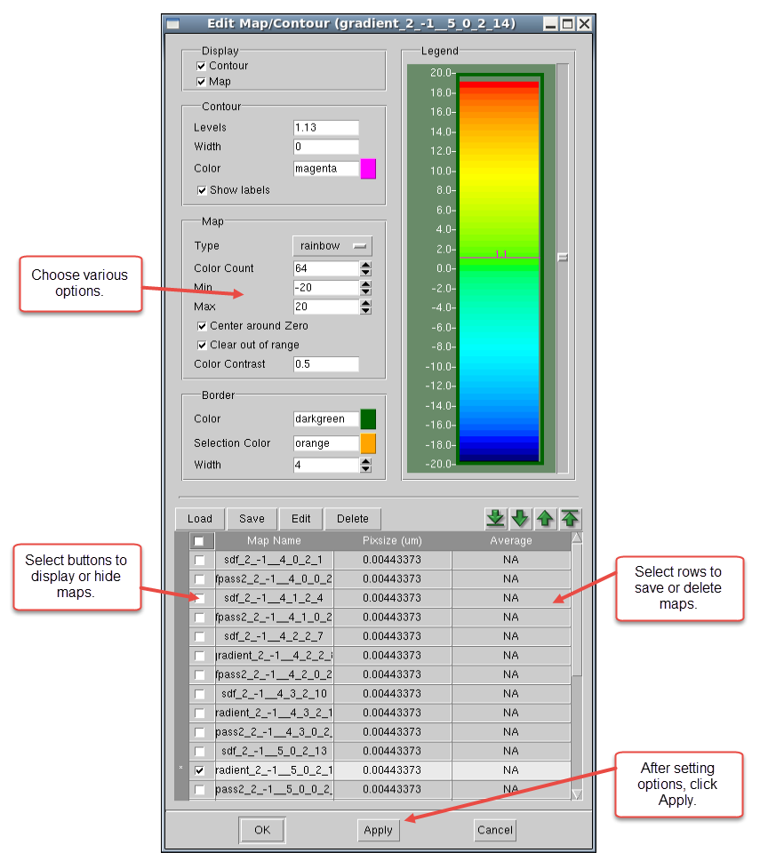
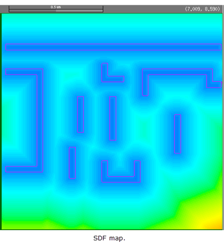
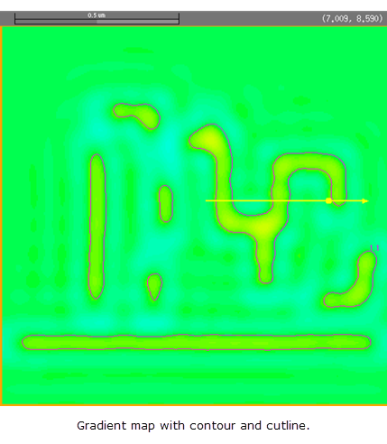

You can display
gradient maps superimposed on your layout using Calibre WORKbench.
Procedure
- In the Calibre WORKbench layout
window double-click the visible gradient map (or select ).
This invokes the Edit Map/Contour form. (see Figure 1).
Figure 1. Edit Map/Contour Form
- Turn off
the gradient map and leave the sdf map on.
- Click Apply.
The sdf map appears as you
have changed it.
Figure 2. SDF and Gradient Maps

- Turn the gradient map back
on for the next procedure, “Drawing Intensity Cutlines”.
- Click Apply or OK.
Results
You have modified
the display of the gradient map for a metal layer.